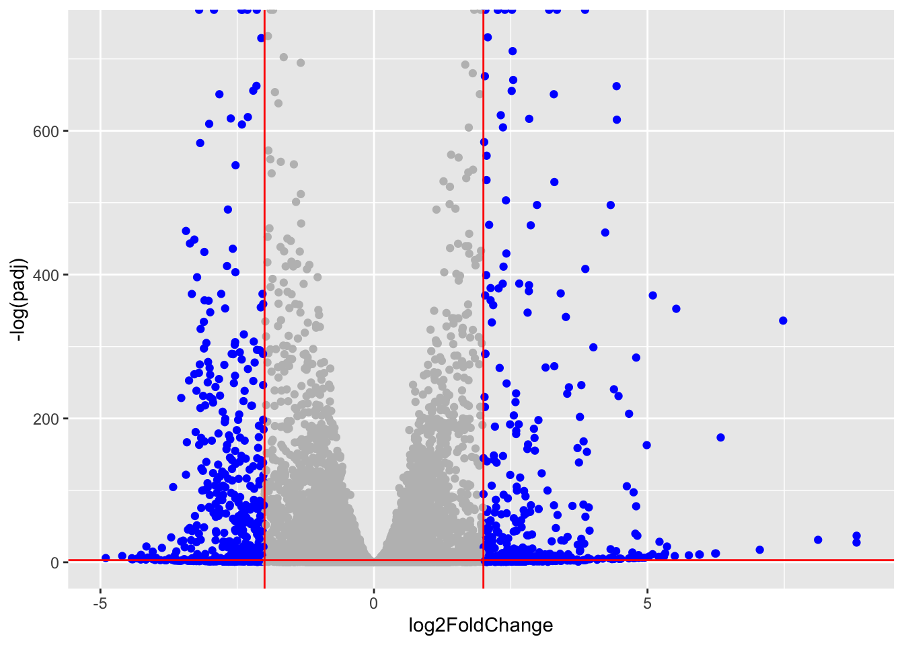

counts <- read.csv("GSE37704_featurecounts.csv", row.names = 1)
metadata <- read.csv("GSE37704_metadata.csv")Lab_13_RNASeq_project
Background
Today we will run through a complete RNASeq analysis
The data for for hands-on session comes from GEO entry: GSE37704, which is associated with the following publication:
Trapnell C, Hendrickson DG, Sauvageau M, Goff L et al. “Differential analysis of gene regulation at transcript resolution with RNA-seq”. Nat Biotechnol 2013 Jan;31(1):46-53. PMID: 23222703
The authors report on differential analysis of lung fibroblasts in response to loss of the developmental transcription factor HOXA1. Their results and others indicate that HOXA1 is required for lung fibroblast and HeLa cell cycle progression. In particular their analysis show that “loss of HOXA1 results in significant expression level changes in thousands of individual transcripts, along with isoform switching events in key regulators of the cell cycle”. For our session we have used their Sailfish gene-level estimated counts and hence are restricted to protein-coding genes only.
Data Import
Check correspondence of metadata and counts (i.e. that the columns in counts match the rows of metadata)
metadata id condition
1 SRR493366 control_sirna
2 SRR493367 control_sirna
3 SRR493368 control_sirna
4 SRR493369 hoxa1_kd
5 SRR493370 hoxa1_kd
6 SRR493371 hoxa1_kdcolnames(counts)[1] "length" "SRR493366" "SRR493367" "SRR493368" "SRR493369" "SRR493370"
[7] "SRR493371"metadata$id[1] "SRR493366" "SRR493367" "SRR493368" "SRR493369" "SRR493370" "SRR493371"counts <- counts[,-1]
test_cols <- !all(colnames(counts) == metadata$id)Also lets remove low count genes
tot.counts <- rowSums(counts)
head(tot.counts)ENSG00000186092 ENSG00000279928 ENSG00000279457 ENSG00000278566 ENSG00000273547
0 0 183 0 0
ENSG00000187634
1129 Let’s remove all zero count genes
zero.inds <- tot.counts == 0
head(zero.inds)ENSG00000186092 ENSG00000279928 ENSG00000279457 ENSG00000278566 ENSG00000273547
TRUE TRUE FALSE TRUE TRUE
ENSG00000187634
FALSE counts <- counts[!zero.inds, ]all(colnames(counts)[-1] == metadata$id)Warning in colnames(counts)[-1] == metadata$id: longer object length is not a
multiple of shorter object length[1] FALSEif( !all(c(T,T,F))) {
message("Wow..... there is a problem with the metadata counts setup!")
}Wow..... there is a problem with the metadata counts setup!head(counts) SRR493366 SRR493367 SRR493368 SRR493369 SRR493370 SRR493371
ENSG00000279457 23 28 29 29 28 46
ENSG00000187634 124 123 205 207 212 258
ENSG00000188976 1637 1831 2383 1226 1326 1504
ENSG00000187961 120 153 180 236 255 357
ENSG00000187583 24 48 65 44 48 64
ENSG00000187642 4 9 16 14 16 16Setup for DESeq
library(DESeq2)Loading required package: S4VectorsLoading required package: stats4Loading required package: BiocGenericsLoading required package: generics
Attaching package: 'generics'The following objects are masked from 'package:base':
as.difftime, as.factor, as.ordered, intersect, is.element, setdiff,
setequal, union
Attaching package: 'BiocGenerics'The following objects are masked from 'package:stats':
IQR, mad, sd, var, xtabsThe following objects are masked from 'package:base':
anyDuplicated, aperm, append, as.data.frame, basename, cbind,
colnames, dirname, do.call, duplicated, eval, evalq, Filter, Find,
get, grep, grepl, is.unsorted, lapply, Map, mapply, match, mget,
order, paste, pmax, pmax.int, pmin, pmin.int, Position, rank,
rbind, Reduce, rownames, sapply, saveRDS, table, tapply, unique,
unsplit, which.max, which.min
Attaching package: 'S4Vectors'The following object is masked from 'package:utils':
findMatchesThe following objects are masked from 'package:base':
expand.grid, I, unnameLoading required package: IRangesLoading required package: GenomicRangesLoading required package: SeqinfoLoading required package: SummarizedExperimentLoading required package: MatrixGenericsLoading required package: matrixStats
Attaching package: 'MatrixGenerics'The following objects are masked from 'package:matrixStats':
colAlls, colAnyNAs, colAnys, colAvgsPerRowSet, colCollapse,
colCounts, colCummaxs, colCummins, colCumprods, colCumsums,
colDiffs, colIQRDiffs, colIQRs, colLogSumExps, colMadDiffs,
colMads, colMaxs, colMeans2, colMedians, colMins, colOrderStats,
colProds, colQuantiles, colRanges, colRanks, colSdDiffs, colSds,
colSums2, colTabulates, colVarDiffs, colVars, colWeightedMads,
colWeightedMeans, colWeightedMedians, colWeightedSds,
colWeightedVars, rowAlls, rowAnyNAs, rowAnys, rowAvgsPerColSet,
rowCollapse, rowCounts, rowCummaxs, rowCummins, rowCumprods,
rowCumsums, rowDiffs, rowIQRDiffs, rowIQRs, rowLogSumExps,
rowMadDiffs, rowMads, rowMaxs, rowMeans2, rowMedians, rowMins,
rowOrderStats, rowProds, rowQuantiles, rowRanges, rowRanks,
rowSdDiffs, rowSds, rowSums2, rowTabulates, rowVarDiffs, rowVars,
rowWeightedMads, rowWeightedMeans, rowWeightedMedians,
rowWeightedSds, rowWeightedVarsLoading required package: BiobaseWelcome to Bioconductor
Vignettes contain introductory material; view with
'browseVignettes()'. To cite Bioconductor, see
'citation("Biobase")', and for packages 'citation("pkgname")'.
Attaching package: 'Biobase'The following object is masked from 'package:MatrixGenerics':
rowMediansThe following objects are masked from 'package:matrixStats':
anyMissing, rowMediansdds <- DESeqDataSetFromMatrix(countData = counts, colData = metadata, design = ~condition)Warning in DESeqDataSet(se, design = design, ignoreRank): some variables in
design formula are characters, converting to factorsRun DESeq
dds <- DESeq(dds)estimating size factorsestimating dispersionsgene-wise dispersion estimatesmean-dispersion relationshipfinal dispersion estimatesfitting model and testingGet results
res <- results(dds)head(res)log2 fold change (MLE): condition hoxa1 kd vs control sirna
Wald test p-value: condition hoxa1 kd vs control sirna
DataFrame with 6 rows and 6 columns
baseMean log2FoldChange lfcSE stat pvalue
<numeric> <numeric> <numeric> <numeric> <numeric>
ENSG00000279457 29.9136 0.1792571 0.3248216 0.551863 5.81042e-01
ENSG00000187634 183.2296 0.4264571 0.1402658 3.040350 2.36304e-03
ENSG00000188976 1651.1881 -0.6927205 0.0548465 -12.630158 1.43990e-36
ENSG00000187961 209.6379 0.7297556 0.1318599 5.534326 3.12428e-08
ENSG00000187583 47.2551 0.0405765 0.2718928 0.149237 8.81366e-01
ENSG00000187642 11.9798 0.5428105 0.5215598 1.040744 2.97994e-01
padj
<numeric>
ENSG00000279457 6.86555e-01
ENSG00000187634 5.15718e-03
ENSG00000188976 1.76549e-35
ENSG00000187961 1.13413e-07
ENSG00000187583 9.19031e-01
ENSG00000187642 4.03379e-01Add annotation
library()
library(AnnotationDbi)
library("org.Hs.eg.db")columns(org.Hs.eg.db) [1] "ACCNUM" "ALIAS" "ENSEMBL" "ENSEMBLPROT" "ENSEMBLTRANS"
[6] "ENTREZID" "ENZYME" "EVIDENCE" "EVIDENCEALL" "GENENAME"
[11] "GENETYPE" "GO" "GOALL" "IPI" "MAP"
[16] "OMIM" "ONTOLOGY" "ONTOLOGYALL" "PATH" "PFAM"
[21] "PMID" "PROSITE" "REFSEQ" "SYMBOL" "UCSCKG"
[26] "UNIPROT" res$symbol = mapIds(org.Hs.eg.db,
keys=row.names(res),
keytype="ENSEMBL",
column="ENTREZID",
multiVals="first")'select()' returned 1:many mapping between keys and columnsres$entrez = mapIds(org.Hs.eg.db,
keys=row.names(res),
keytype="ENSEMBL",
column="ENTREZID",
multiVals="first")'select()' returned 1:many mapping between keys and columnsres$name = mapIds(org.Hs.eg.db,
keys=row.names(res),
keytype="ENSEMBL",
column="ENTREZID",
multiVals="first")'select()' returned 1:many mapping between keys and columnshead(res, 10)log2 fold change (MLE): condition hoxa1 kd vs control sirna
Wald test p-value: condition hoxa1 kd vs control sirna
DataFrame with 10 rows and 9 columns
baseMean log2FoldChange lfcSE stat pvalue
<numeric> <numeric> <numeric> <numeric> <numeric>
ENSG00000279457 29.913579 0.1792571 0.3248216 0.551863 5.81042e-01
ENSG00000187634 183.229650 0.4264571 0.1402658 3.040350 2.36304e-03
ENSG00000188976 1651.188076 -0.6927205 0.0548465 -12.630158 1.43990e-36
ENSG00000187961 209.637938 0.7297556 0.1318599 5.534326 3.12428e-08
ENSG00000187583 47.255123 0.0405765 0.2718928 0.149237 8.81366e-01
ENSG00000187642 11.979750 0.5428105 0.5215598 1.040744 2.97994e-01
ENSG00000188290 108.922128 2.0570638 0.1969053 10.446970 1.51282e-25
ENSG00000187608 350.716868 0.2573837 0.1027266 2.505522 1.22271e-02
ENSG00000188157 9128.439422 0.3899088 0.0467163 8.346304 7.04321e-17
ENSG00000237330 0.158192 0.7859552 4.0804729 0.192614 8.47261e-01
padj symbol entrez name
<numeric> <character> <character> <character>
ENSG00000279457 6.86555e-01 NA NA NA
ENSG00000187634 5.15718e-03 148398 148398 148398
ENSG00000188976 1.76549e-35 26155 26155 26155
ENSG00000187961 1.13413e-07 339451 339451 339451
ENSG00000187583 9.19031e-01 84069 84069 84069
ENSG00000187642 4.03379e-01 84808 84808 84808
ENSG00000188290 1.30538e-24 57801 57801 57801
ENSG00000187608 2.37452e-02 9636 9636 9636
ENSG00000188157 4.21963e-16 375790 375790 375790
ENSG00000237330 NA 401934 401934 401934Visulaize results
library(ggplot2)
my_cols <- rep("gray", nrow(res))
my_cols[abs(res$log2FoldChange) >= 2] <- "blue"
ggplot(res) +
aes(log2FoldChange, -log(padj)) +
geom_point(col = my_cols) +
geom_vline(xintercept = c(-2, 2), col = "red") +
geom_hline(yintercept = -log(0.05), col = "red")Warning: Removed 1237 rows containing missing values or values outside the scale range
(`geom_point()`).
Pathway analysis
library(gage)library(gageData)
data(kegg.sets.hs)
data(sigmet.idx.hs)foldchanges = res$log2FoldChange
names(foldchanges) = res$entrez
head(foldchanges) <NA> 148398 26155 339451 84069 84808
0.17925708 0.42645712 -0.69272046 0.72975561 0.04057653 0.54281049 keggres = gage(foldchanges, gsets=kegg.sets.hs)head(keggres$less) p.geomean stat.mean
hsa04110 Cell cycle 8.995727e-06 -4.378644
hsa03030 DNA replication 9.424076e-05 -3.951803
hsa05130 Pathogenic Escherichia coli infection 1.405864e-04 -3.765330
hsa03013 RNA transport 1.246882e-03 -3.059466
hsa03440 Homologous recombination 3.066756e-03 -2.852899
hsa04114 Oocyte meiosis 3.784520e-03 -2.698128
p.val q.val
hsa04110 Cell cycle 8.995727e-06 0.001889103
hsa03030 DNA replication 9.424076e-05 0.009841047
hsa05130 Pathogenic Escherichia coli infection 1.405864e-04 0.009841047
hsa03013 RNA transport 1.246882e-03 0.065461279
hsa03440 Homologous recombination 3.066756e-03 0.128803765
hsa04114 Oocyte meiosis 3.784520e-03 0.132458191
set.size exp1
hsa04110 Cell cycle 121 8.995727e-06
hsa03030 DNA replication 36 9.424076e-05
hsa05130 Pathogenic Escherichia coli infection 53 1.405864e-04
hsa03013 RNA transport 144 1.246882e-03
hsa03440 Homologous recombination 28 3.066756e-03
hsa04114 Oocyte meiosis 102 3.784520e-03library(pathview)
pathview(gene.data=foldchanges, pathway.id = "hsa04110")
Let’s try GO analysis and compare to KEGG analysis
data(go.sets.hs)
data(go.subs.hs)
# Focus on Biological Process subset of GO
gobpsets = go.sets.hs[go.subs.hs$BP]
gobpres = gage(foldchanges, gsets=gobpsets, same.dir=TRUE)head( gobpres$less ) p.geomean stat.mean p.val
GO:0048285 organelle fission 1.536227e-15 -8.063910 1.536227e-15
GO:0000280 nuclear division 4.286961e-15 -7.939217 4.286961e-15
GO:0007067 mitosis 4.286961e-15 -7.939217 4.286961e-15
GO:0000087 M phase of mitotic cell cycle 1.169934e-14 -7.797496 1.169934e-14
GO:0007059 chromosome segregation 2.028624e-11 -6.878340 2.028624e-11
GO:0000236 mitotic prometaphase 1.729553e-10 -6.695966 1.729553e-10
q.val set.size exp1
GO:0048285 organelle fission 5.841698e-12 376 1.536227e-15
GO:0000280 nuclear division 5.841698e-12 352 4.286961e-15
GO:0007067 mitosis 5.841698e-12 352 4.286961e-15
GO:0000087 M phase of mitotic cell cycle 1.195672e-11 362 1.169934e-14
GO:0007059 chromosome segregation 1.658603e-08 142 2.028624e-11
GO:0000236 mitotic prometaphase 1.178402e-07 84 1.729553e-10Reactome
Some folks really like Reactomes online (i.e. their webpage viewer) rather than the R package of the same name (available from bioconductor).
To use the website viewer (https://reactome.org/) we want to upload our set of gene symbols for the genes we want to focus on (here those with a P-value below 0.05)
sig_genes <- res[res$padj <= 0.05 & !is.na(res$padj), "symbol"]
write.table(sig_genes, file="significant_genes.txt", row.names=FALSE, col.names=FALSE, quote=FALSE)Save results
write.csv(res, file = "myresults.csv")save(res, file = "my_results.RData")